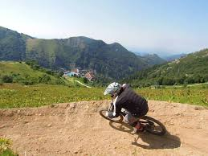
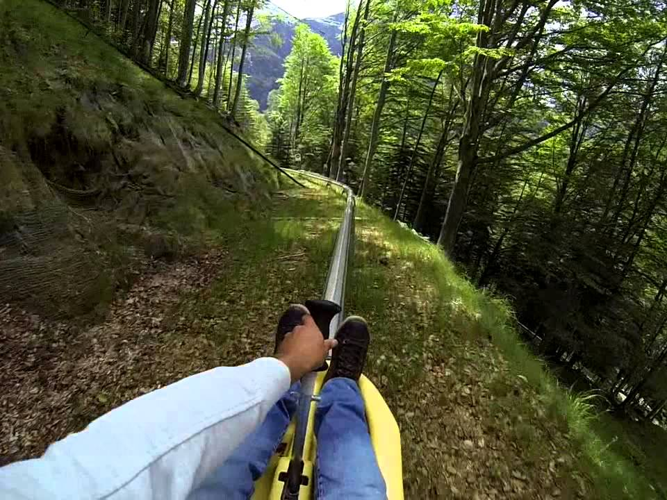

Scopri sentieri panoramici che attraversano boschi, prati fioriti e creste montuose. I percorsi variano
in difficoltà, offrendo opzioni per principianti e esperti. Durante le escursioni, puoi ammirare una varietà di flora e fauna
locali, fare soste presso rifugi di montagna e goderti viste mozzafiato su vallate e cime circostanti.
Mountain Bike

Esplora la montagna su due ruote con percorsi di mountain bike che variano da tracciati facili a discese
tecniche per esperti. I sentieri sono ben segnalati e attraversano paesaggi spettacolari, inclusi boschi ombrosi, prati aperti
e terreni rocciosi. Puoi noleggiare una mountain bike in loco e partecipare a tour guidati per scoprire i migliori percorsi.
Bob estivo

Prova l'emozione del bob estivo su una pista appositamente progettata che scende lungo il pendio
della montagna. Questa attività è perfetta per tutta la famiglia, offrendo un'esperienza sicura ma adrenalinica. I bob sono
equipaggiati con freni manuali che ti permettono di controllare la velocità mentre sfrecci tra curve e rettilinei, godendo di
una vista mozzafiato sul paesaggio circostante. La pista è realizzata con materiali scorrevoli che assicurano una corsa fluida
e divertente, indipendentemente dalle condizioni meteorologiche. Dopo la discesa, un comodo impianto di risalita ti riporterà in
cima, pronto per un'altra emozionante corsa. Un'attività perfetta per chi cerca divertimento e adrenalina in un ambiente
naturale straordinario.
Fotografia Naturalistica
Cattura la bellezza della montagna con la tua macchina fotografica, esplorando luoghi incantevoli e
paesaggi spettacolari. Dai panorami mozzafiato delle vette agli intimi dettagli della flora e fauna locali, le opportunità
fotografiche sono infinite. Partecipa a workshop di fotografia per migliorare le tue abilità e scoprire i segreti per scattare
foto straordinarie in ambienti naturali.